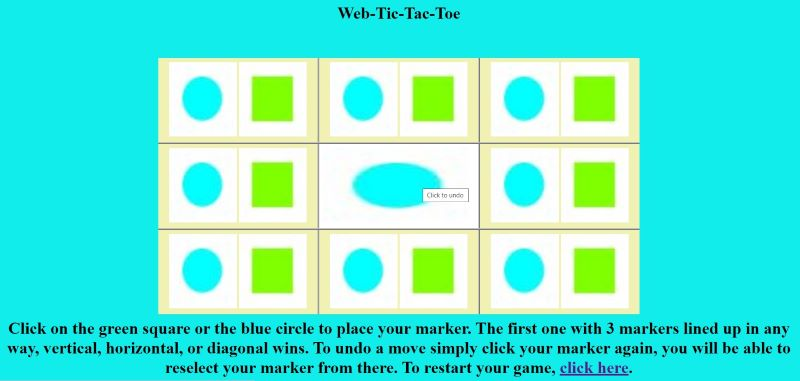
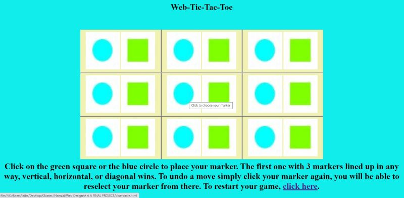
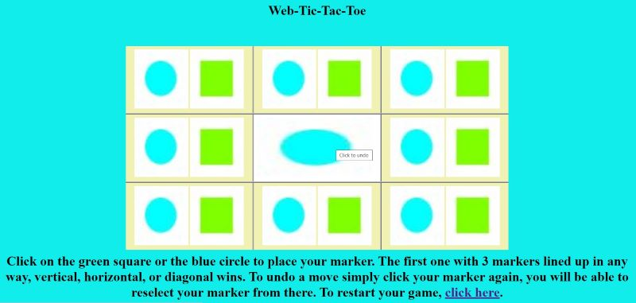
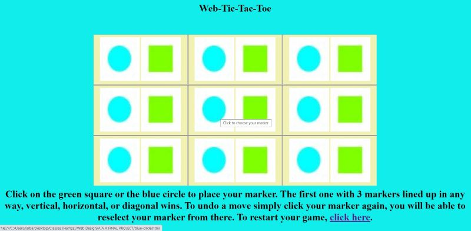

Muhammad Zaman and Tony Li
PRO-LBM WEB PAGE DESIGN sect. 00002
Web-Tic-Tac-Toe | Muhamamd Zaman
Magic Square | Tony Li
Project started on: 11/29/2020
Project due on: 12/8/2020
Report Sheet
Description of Muhammad Zaman's project:
The subject that I (Muhammad Zaman) had chosen was Web Tic-Tac-Toe. I find this subject to be especially interesting as Tic-Tac-Toe used to be my favorite game as a child, but when I would play the game, I would often feel bad for wasting so much paper and harming the environment. I find that this online format will allow me to enjoy my favorite childhood game while not harming the environment and not making me feel bad. The game has a green square and a blue circle to replace the standard x and o. It was meant to add some flavor to the game by changing this up a bit. You win the game by getting 3 of your markers in a row, weather that be horizontally, vertically or diagonally. The images below show some possible ways you can win. To select your maker, you simply click on your selected marker and that will appear in the box, the last image show to do that. If you want to undo your move simply click you marker again and then you will able to choose a marker again.
") 



Description of Tony Li's project
My project is called Magic Squares. At first, I had to do a bit of research to remember how to play the game. Turns out it's pretty easy but requires some concentration. The goal of the game is to get to the number 15 vertically, horizontally and diagonally by only using the numbers once. Since the project doesn't contain any programming, the user must pay attention to make sure he/she doesn't reuse the number and the sum gives 15. I added two buttons at the bottom: one is to reset the game and the other one shows a solution. The game has a 3x3 frameset with each frame containing the numbers 1 to 9. By clicking on a number, it fills the entire frame and you can click it again to undo just that frame.
Here are a few pictures:
HTML Editor Report
An HTML editor is probably a developer's most useful tool. From correcting typos to auto completing tags, its goal is to make the coder's job easier.
There are plenty of text editors you can download. The most popular ones for HTML are Atom, Sublime Text, Visual Studio Code, Notepad ++. We will be focusing on Atom and its specific features down below.
Before that, let's explore some common components. If you ask any experienced developer, no matter which language they code in, they will most likely tell you they use an editor. And the most probable reason is because it simplifies everything. Of course, there is the added effect of feeling cooler with the dark background and different colored tags (Unofficial research say it might improve your productivity). No one wants to code on a plain white paper with all black font.
When selecting a text editor, you must consider what you need. For those who focuses only on HTML, they might find Sublime Text good since it has everything they need. However, those who also work in the back-end with Python might choose PyCharm since it includes a terminal/command line interphase that allows you to use Git and other features with its modules such as Django or Flask. Nonetheless, one tip we would give to those who are choosing a text editor is that no matter which one you choose, your skill does not depend on it. The important thing is to write clean code.
The text editor that we have chosen is Atom. Atom is a free editor that works on macOS, Linux, and Microsoft Windows. It was developed by Git Hub. It is fully customizable in HTML, CSS, and JavaScript. Furthermore, it has multiple libraries which you can install such as Linter, atom-beautify, autoclose-html-plus and much more. These packages are especially helpful in writing your code. It allows for customization and some packages even write in some code for you. For example, autoclose-html-plus, auto closes HTML tags for you and you don't have to worry about adding a closing tag. The atom-beautify package will clean up your code and make it more readable. It will add standard spacing to your code, which makes it easier for you and your fellow developers to understand.
The best part is that Atom is very beginner friendly. You simply download the app and whenever you want to use it, you can either open it by simply clicking on the atom icon or by right clicking your file and hovering over "open with" and selecting Atom. The best way to start to write code in Atom is by reading the welcome manual. It includes very specific details. Or you can look up how to use specific packages online.
Atom's very big community following allows you to find a lot of information about specific atom packages online. One thing you should not do on Atom is not take advantage of the amazing libraries available. If you are using atom just to write code as you would have in notepad the there is no point. Atom has to be downloaded which takes up space on your hard drive. If you are going to download it, use it with the libraries! In our opinion, the features that are the most useful are the libraries. They help a person write code in every way. They help find mistakes and also help make the text more readable. They are definitely the most user-friendly with its efficient features.
Overall, we found that Atom is great. However there were a few things we wanted to address. First off, there are just to many features to learn. To master Atom, it would take a lot of effort which no everyone has. Furthermore, it's a storage killer. It takes a ton to download and most of the time, it will also eat up your RAM. From this perspective, it would be better to change to another text editor if you are low on storage.
Back to project Home Page